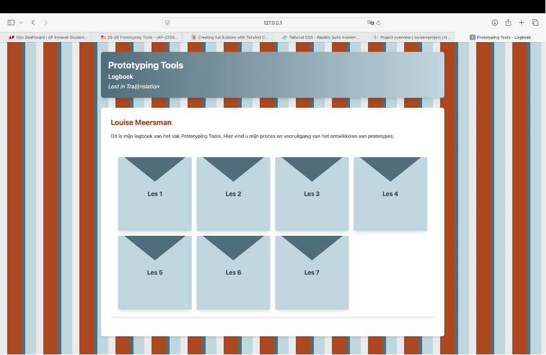

TailwindCSS
Deze week heb ik mijn html-file verder aangepast aan de hand van TailwindCSS. Met de website tailwindcss.com ben ik opzoek gegaan naar beter mogelijkheden. Dit zijn de items die ik heb veranderd en waarom:- Achtergrond: De witte achtergrond was ééntonig en onorgineel, dus ben ik gaan spelen met verschillende kleuren. Zo ben ik op een streepjespatroon gekomen dat het ontwerp iets interessanter maakt. Ik heb wel besloten om dit enkel op de index-pagina toe te passen en niet op de andere pagina’s. Dit zo anders te druk zijn en de aandacht van het onderwerp afleiden.
- Kleuren: Ook de kleuren blauw heb ik omgezet naar een iets zachtere toon. Ik heb twee hoofdkleuren uitgekozen die verschillende tonen zijn van elkaar, zodat het ontwerp samenhangend blijft. Het contrast moest ook groot genoeg zijn zodat je op de lichte kleur de donkere tekst goed kan lezen en omgekeerd.
- Buttons: De buttons uit mijn vorig ontwerp waren veel te lang voor de hoeveelheid tekst die erin moest. Ik heb deze aangepast naar een soort envelope buttons op een grid zodat er meerdere naast elkaar passen. Ook heb ik gekozen voor een hover en movement effect wanneer je over de button gaat.
